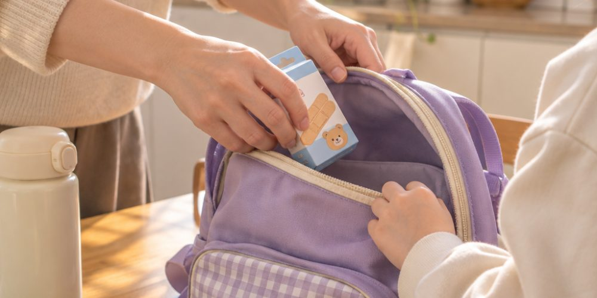
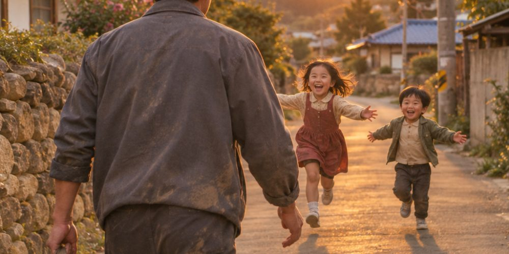
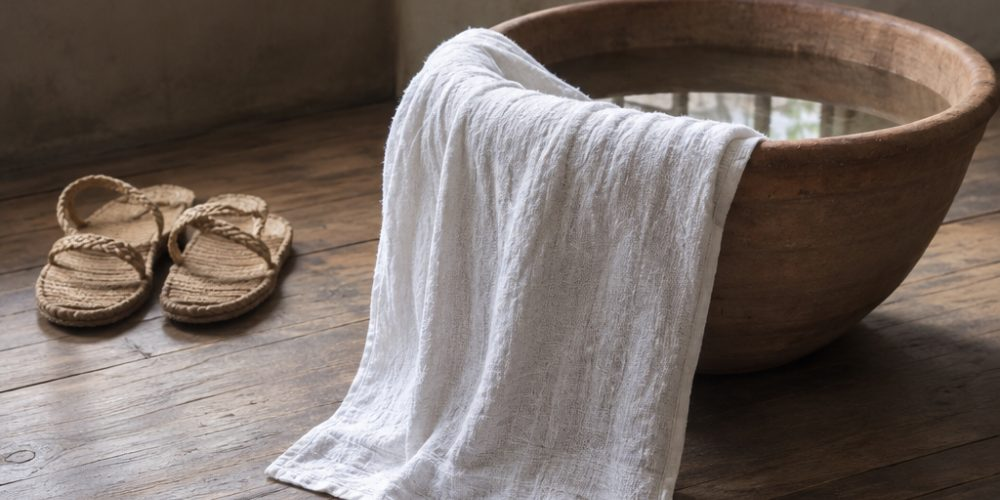

“나는 남한테 빚지고는 못 산다.” 반듯하지만 조금 고단한 말입니다. 그런데 세상에는 사과로도, 세월로도 장부가 지워지지 않는 빚이 있습니다. 11월 「감사로 다시 걷다」의 마지막 주, 한 해를 마무리하는 왕이신 그리스도 주일에 희년의 말씀을 들었습니다.
농사를 망쳐 밭을 팔고, 남의 집에서 품을 팔던 한 아버지가 있었습니다. 해 질 녘 언덕 너머에서 뿔나팔 소리가 울리자, 그는 연장을 내려놓고 집으로 달려갑니다. 빚을 다 갚아서가 아니라, 하나님이 정하신 그날, 희년이 왔기 때문입니다.
본문 레위기 25:8-12 읽기
8너는 일곱 안식년을 계수할지니 이는 칠 년이 일곱 번인즉 안식년 일곱 번 동안 곧 사십구 년이라
9일곱째 달 열흘날은 속죄일이니 너는 뿔나팔 소리를 내되 전국에서 뿔나팔을 크게 불지며
10너희는 오십 년째 해를 거룩하게 하여 그 땅에 있는 모든 주민을 위하여 자유를 공포하라 이 해는 너희에게 희년이니 너희는 각각 자기의 소유지로 돌아가며 각각 자기의 가족에게로 돌아갈지며
11그 오십 년째 해는 너희의 희년이니 너희는 파종하지 말며 스스로 난 것을 거두지 말며 가꾸지 아니한 포도를 거두지 말라
12이는 희년이니 너희에게 거룩함이니라 너희는 밭의 소출을 먹으리라
1
빚보다 먼저, 탕감이 있었습니다
레 25:1, 9

자료 사진
희년은 7년씩 일곱 번, 49년을 지나 맞는 오십 년째 해입니다. 하나님이 이 말씀을 주신 곳은 시내 산, 아직 아무도 땅을 사고팔지도, 빚을 지지도 않았을 때입니다. 아이가 넘어지기도 전에 반창고부터 챙겨 두는 부모처럼, 하나님은 우리가 빚지기도 전에 탕감부터 준비하셨습니다.
그것도 세 겹입니다. 해마다 속죄일(레 16:34), 7년마다 면제년(신 15:1), 50년마다 희년. 한 번 놓쳐도 또 기회가 옵니다. 그리고 희년의 나팔은 바로 속죄일에 울렸습니다(9절). 하나님의 순서는 언제나 같습니다. 용서가 먼저, 자유는 그다음입니다.
“하나님의 달력에는 이미 여러분이 집으로 돌아갈 날이 적혀 있어요.”
2
희년은 장부를 지우고, 우리를 집으로 데려갑니다
레 25:10, 23

자료 사진
휴대폰 사진은 지워도 휴지통에 남지만, 희년은 휴지통까지 비우는 날입니다. 하나님은 지우기만 하고 손을 털지 않으시고, 원래 살던 집, 원래 가족 품까지 데려다주십니다. “토지는 다 내 것임이니라”(23절). 우리말로 하면 이 한마디입니다. “너는 빚쟁이 거 아니야. 내 거야.”
“갚을 것이 없으므로 둘 다 탕감하여 주었으니”누가복음 7:42 · 오백 데나리온도, 오십 데나리온도
그런데 빚을 지워 주는 것만으로는 모자랍니다. 다 갚아 줘도 다시 빚을 지는 일이 많기 때문입니다. 사는 자리가 바뀌어야 합니다. 말씀과 기도와 믿음의 가족, 그것이 왕이 지어 주신 새집입니다(골 1:13). 지난주 추수감사 과일과 간식을 이웃들께 나눈 것처럼, 받은 은혜가 흘러가면 다른 동네에도 나팔 소리가 퍼집니다.
“빚이 크다고 버려지지 않아요. 빚이 작다고 혼자 갚을 수 있는 것도 아니에요.”
3
그 희년이, 오늘 예수님으로 오셨습니다
눅 4:18-21

자료 사진
나사렛 회당에서 예수님은 “주의 은혜의 해를 전파하게 하려 하심이라”를 읽으시고 “이 글이 오늘 너희 귀에 응하였느니라” 하셨습니다. 희년이 달력의 날짜가 아니라 한 분의 이름으로 오셨습니다. 만 달란트 빚진 종은 시간을 구했지만, 왕은 자유를 주셨습니다(마 18:27).
“우리를 거스르고 불리하게 하는 법조문으로 쓴 증서를 지우시고 제하여 버리사 십자가에 못 박으시고”골로새서 2:14
우리는 또 넘어집니다. 그래서 꼭 새길 말이 있습니다. 탕감은 단번에(히 10:10), 은혜는 아침마다(애 3:23). 목욕은 한 번, 발은 날마다 씻습니다(요 13:10). 그 말씀을 하실 때 예수님은 왕관이 아니라 수건을 두르고 제자들 발 앞에 무릎 꿇고 계셨습니다. 우리가 고백하는 왕은 그런 왕이십니다.
“십자가는 하늘에서 온 문자 한 통이에요. ‘완납되었습니다.’”
이제 끊고, 새롭게. 끊겠다는 결단은 우리가 하고, 끊어 내시고 새롭게 하시는 일은 왕이 하십니다. 갚을 수 없는 구원의 빚은 지워졌고, 이제 남은 빚은 하나, 사랑의 빚입니다(롬 13:8).
“나는 남한테 빚지고는 못 산다”에서 “나는 은혜에 빚지고는 못 산다”로
설교 인포그래픽
한눈에 보는 희년
칠 년이 일곱 번, 그리고 오십 년째 해
동그라미 하나가 1년입니다 · 레 25:8-10
50희년 · 요벨
해마다 속죄일7년째 면제년50년째 희년
1년속죄일온 백성의 죄를 씻는 날 레 16:34
7년면제년“매 칠 년 끝에는 면제하라” 신 15:1
50년희년빚이 지워지고 집으로 레 25:10
하나님의 순서
희년의 나팔은 속죄일에 울렸습니다 · 레 25:9-10
용서속죄일
›
자유뿔나팔 선포
›
귀향소유지와 가족에게
탕감은 단번에, 은혜는 아침마다
“이미 목욕한 자는 발밖에 씻을 필요가 없느니라” 요 13:10
단번에
목욕은 한 번
빚 문서를 십자가에 (골 2:14)
단번에 드리신 몸 (히 10:10)
지워진 장부는 다시 살아나지 않음
아침마다
발은 날마다
아침마다 새로운 긍휼 (애 3:23)
일용할 양식 곁의 죄 사함 (마 6:11-12)
오늘 묻은 먼지는 오늘 털기
지우기만 하지 않고, 옮기십니다
“그의 사랑의 아들의 나라로 옮기셨으니” 골 1:13
내 생각 내 감정 내 고집
›
왕이 지어 주신 새집말씀 · 기도 · 믿음의 가족
설교를 마치며 드린 기도
평강의 왕이신 하나님 아버지, 저희가 빚지기도 전에 탕감을 먼저 준비하시고, 1년과 7년과 50년의 길로 끝까지 저희를 부르신 은혜에 감사드립니다.
이제 내 생각과 내 감정과 내 의지로 다시 빚지는 삶을 끊게 하시고, 날마다 말씀과 기도로 새롭게 살게 하옵소서. 받은 은혜를 사랑으로 채워 이웃에게 흘려보내게 하시고, 우리 동네 곳곳에 희년의 나팔 소리가 퍼지게 하옵소서.
우리의 희년이 되신 예수 그리스도의 이름으로 기도드립니다. 아멘.
함께 드리는 기도제목
서로 격려하고 기도하며 말씀을 나누는 일에 힘쓰는 공동체가 되도록
각 부서가 맡겨진 자리에서 믿음과 사랑으로 든든히 세워지도록
담임목사님 가정, 성도들의 가정 위에 하나님의 은혜와 강건함이 있도록
군선교와 세계선교를 위해 헌신하는 모든 선교사와 동역자들을 하나님께서 지켜주시도록
키움스쿨과 다음 세대 가운데 하나님의 꿈과 비전이 이루어지고, 믿음과 사랑으로 세상을 섬기는 다음 세대가 세워지도록
이번 주 한 걸음
이번 주에 할 일 세 가지
장부 지우기
마음에 걸리는 빚 하나를 종이에 적고, 그 위에 크게 쓰세요. “예수님이 다 갚으셨습니다(골 2:14).”
종이가 없다면 여기에 적어 보세요.
적은 내용은 저장되거나 전송되지 않습니다.
완 납예수님이 다 갚으셨습니다 · 골 2:14
“다 끝났어. 이제 집에 가자.”
말씀과 기도 먼저
내 생각과 감정과 고집이 앞서는 순간, 말씀 한 줄과 기도 한마디를 먼저 드리세요.
생각이 앞설 땐 말씀을, 감정이 앞설 땐 기도를, 고집이 앞설 땐 믿음의 가족에게 먼저 물어보세요. 함께 기도하고 싶다면 기도제목 보내기 ›